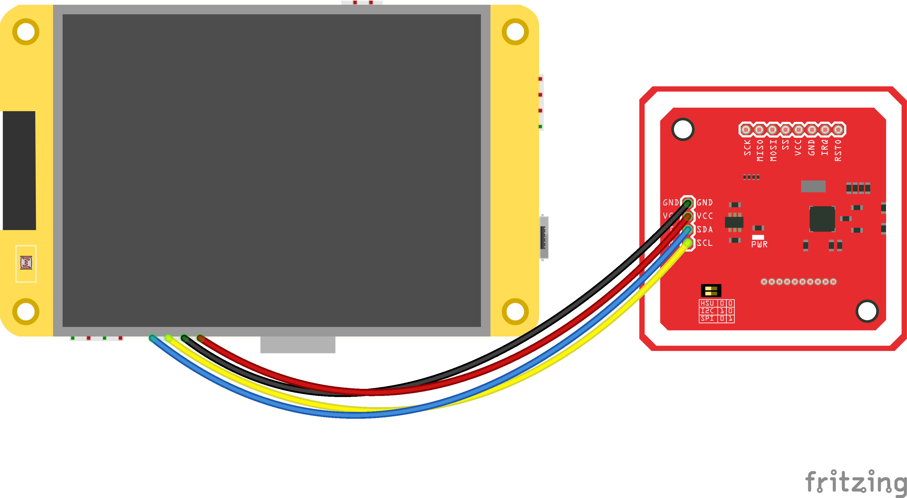

cryptnox-pos
Standalone USDC payment terminal powered by a Cryptnox smart card and the Cheap Yellow Display


cryptnox-pos is a self-contained payment terminal firmware that runs on the ESP32-2432S028 "Cheap Yellow Display" (CYD). It also serves as a reference dev kit showing how to integrate the cryptnox-sdk-esp32 into a real-world end-user product.
The user selects a USDC amount on the touchscreen, taps a Cryptnox smart card on the attached PN532 reader, and the terminal signs and broadcasts an EIP-1559 transfer on Ethereum Sepolia via a JSON-RPC endpoint (PublicNode by default), then waits for the on-chain receipt before showing Approved.
- Warning
- Reference / educational dev kit — not a tamper-resistant terminal. The ESP32 is not a secure microcontroller and has no protected RAM. The optional secure build (Flash Encryption + encrypted NVS + Secure Boot v2) protects secrets at rest and locks the boot chain, but at run time the card PIN (entered on-screen, not stored in the firmware) and the Wi-Fi password live in plaintext RAM — readable by anyone who can reach live memory (JTAG, a run-time exploit). The Cryptnox Hardware Wallet remains the trust anchor — private keys never leave the card, so a compromised ESP32 still cannot sign without it.
Built on
- cryptnox-sdk-esp32 (git submodule) — secure channel, ECDH/ECDSA, PN532 transport, ESP32 crypto provider
- LVGL 8 (managed component) — the SumUp-style portrait UI
- TFT_eSPI + XPT2046_Touchscreen (git submodules) — CYD panel driver + touch, behind LVGL
- arduino-esp32 as an ESP-IDF managed component (Arduino runtime for the display libraries; the rest stays on native IDF)
Supported hardware
Cryptnox Hardware Wallet smart cards
Works with Cryptnox Hardware Wallet smart cards running firmware v1.6.0 or later.
| Smart card | Wallet version |
|---|---|
| Crypto Hardware Wallet – Dual Card Set | v1.6.1 |
NFC readers
| Reader | Type | Interface |
|---|---|---|
| PN532 NFC Module | Contactless (NFC/ISO 14443) | I²C |
Host board
| Board | MCU | Display | Touch |
|---|---|---|---|
| ESP32-2432S028 "Cheap Yellow Display" | ESP32-WROOM-32 | ILI9341 240×320 (portrait) | XPT2046 (resistive) |
Installation
- Install ESP-IDF v5.5 (the project pulls espressif/arduino-esp32 and lvgl/lvgl as IDF managed components; TFT_eSPI / XPT2046 are in-tree submodules).
- Clone this repository with submodules: git clone --recursive https://github.com/embarquech/cryptnox-pos.gitcd cryptnox-pos
- Copy the credentials template and fill it in: main/config.h is gitignored — see Configuration below.cp config.template.h main/config.h
- Build and flash (Windows PowerShell wrapper provided): The first build also fetches espressif/arduino-esp32 from the IDF component registry, so expect a longer initial compile..\auto_flash.ps1 set-target esp32.\auto_flash.ps1 monitor
- Remarks
- On macOS/Linux, source the IDF env (. $IDF_PATH/export.sh) and use the standard idf.py set-target esp32, idf.py build flash monitor commands.
Hardware setup
- Attention
- Always double-check the wiring before powering the board to prevent damage.
The CYD exposes its free GPIOs on the CN1 header. The firmware uses the I²C interface to the PN532.
CYD CN1 ↔ PN532 NFC — I²C interface
| PN532 Pin | CYD Pin / Label | Wire Color |
|---|---|---|
| GND | GND | Black |
| VCC | 3.3V | Red |
| SDA | GPIO 27 (CN1 SDA) | Blue |
| SCL | GPIO 22 (CN1 SCL) | Yellow |
- Important
- Make sure the switches on the PN532 module are configured for I²C mode:
- Switch 0 → LOW
- Switch 1 → HIGH

The display, touchscreen and backlight pins are already wired internally on the CYD; the firmware drives them through TFT_eSPI's ILI9341_2_DRIVER in portrait rotation (240×320), with invertDisplay(true) + a GAMMASET fix for the panel and a calibrated XPT2046 touch mapping. The backlight is PWM-dimmable (LEDC).
Configuration
main/config.h is gitignored. Copy config.template.h to main/config.h and fill in:
| Field | Description |
|---|---|
| RPC_URL | Ethereum JSON-RPC endpoint (PublicNode Sepolia by default; an Infura variant is provided commented-out) |
| RPC_PROJECT_ID / RPC_API_SECRET | Optional — only when using Infura (HTTP Basic Auth); leave undefined for PublicNode |
| ADDR_FROM | Ethereum address of the card (m/44'/60'/0'/0/0) — used to fetch the nonce and validate the ecrecover parity |
| ADDR_TO | Destination address for every transfer |
| ADDR_USDC | USDC ERC-20 contract address on the target chain (Sepolia testnet by default) |
| CHAIN_ID_SEPOLIA, MAX_PRIORITY_FEE, MAX_FEE, GAS_LIMIT_ERC20 | Chain ID and EIP-1559 gas parameters (the fees are first-boot defaults, editable at run time in the settings) |
Not in config.h — set on the device, never baked into the firmware:
- Wi-Fi — provisioned at first boot via the touchscreen network picker (stored in NVS).
- Card PIN — entered on the touchscreen keypad at sign time, scrubbed from RAM right after.
- Transfer amount — chosen on the keypad per transaction.
Secure build (Flash Encryption + encrypted NVS + Secure Boot v2)
By default the firmware and NVS are unencrypted and unsigned — fine for the dev kit. An optional secure build closes three audit findings at once:
| Feature | Closes | Effect |
|---|---|---|
| Flash Encryption | F-01-at-rest | a flash dump is ciphertext, useless without the key |
| Encrypted NVS (nvs_keys partition) | F-16 | the Wi-Fi password / fees in NVS are encrypted |
| Secure Boot v2 (RSA-3072) | F-02 | only firmware signed with your key boots |
- Attention
- These burn eFuses — IRREVERSIBLE. Validate on a sacrificial board first; a misconfigured burn bricks the unit. On the classic ESP32 Secure Boot v2 supports a single key with no revocation/rotation (that is an S2/S3/C-series feature): if your signing key leaks you cannot revoke it, and if you lose it the board can never be updated again. Keep both keys offline, in multiple copies.
In the repo:
- sdkconfig.defaults.flash_encryption — the overlay: Flash Encryption (Development mode), CONFIG_NVS_ENCRYPTION, Secure Boot v2 + signing key, ESP32_REV_MIN_3 (required for SBv2) and PARTITION_TABLE_OFFSET=0x10000 (the signed+encrypted bootloader outgrows the default window).
- partitions.csv — the nvs_keys partition (inert in a normal build).
- tools/secure_provision.py — one-shot factory provisioning of a fresh board.
- tools/secure_flash.py — pre-encrypt + flash for routine reflashing.
Step 1 — generate both keys, ONCE per product (store OFFLINE, gitignored):
Step 2 — build with the secure overlay (the bootloader + app are signed automatically at build time):
(PowerShell: quote the whole -D argument as shown, because of the ;.)
Step 3 — provision a fresh board (one command, IRREVERSIBLE):
It checks the board is fresh, burns the flash-encryption key, enables Flash Encryption, then flashes the signed + pre-encrypted bootloader/table/app. After it finishes, reset the board: the bootloader finalizes Secure Boot on first boot (burns the public-key digest + ABS_DONE_1). Verify:
→ FLASH_CRYPT_CNT odd and ABS_DONE_1 = True = fully hardened.
Routine reflash afterwards (board already provisioned, Flash Encryption active — never use plain idf.py flash, it would write plaintext the chip mis-decrypts):
Because images are pre-encrypted on the host, FLASH_CRYPT_CNT is never consumed. To distribute an encrypted image instead of flashing locally:
- Warning
- The overlay uses Flash Encryption Development mode so the board stays reflashable while you validate. Only in manufacturing, after full validation, switch ..._MODE_DEVELOPMENT → ..._MODE_RELEASE and reflash: that permanently disables plaintext UART flashing and flash dumps. Note: on the classic ESP32 encrypted NVS requires Flash Encryption (no HMAC eFuse scheme), so the two cannot be separated.
Payment flow
- Splash — Cryptnox logo + spinner while Wi-Fi / SNTP / RPC / wallet come up (version shown at the bottom).
- Amount — SumUp-style numeric keypad (cents entry); tap Charge.
- Send — Ledger-style review showing the amount, the destination address and the USDC contract in full; tap Confirm or Cancel.
- PIN — enter the card PIN on the on-screen keypad (validated, then wiped from RAM after signing — never stored).
- Transaction — tap the Cryptnox card on the PN532: Processing (opening the secure channel) → Signing (the card signs keccak256(unsigned_tx)) → Authorizing (recover the v parity via the ecrecover precompile, RLP-encode the EIP-1559 tx, broadcast via eth_sendRawTransaction) → Confirming (poll eth_getTransactionReceipt until the tx is mined).
- Approved / Declined — Approved only on a mined receipt with status 0x1; tap New sale to start the next transfer.
- Note
- The card must have a seed loaded and the BIP-32 derivation path m/44'/60'/0'/0/0 available. Provision it once with the Cryptnox CLI: cryptnox initializecryptnox seed generate
Troubleshooting
- Inverted colours / banding on gradients → the CYD panel needs invertDisplay(true) (inverted colours) and a GAMMASET tweak (banding/"milky gamma"); both are already applied in ui_task. If the screen is blank/scrambled your board may use the other ILI9341 variant — set CONFIG_TFT_ILI9341_DRIVER=y (instead of _2) in sdkconfig.defaults and rebuild.
- Touch hitboxes are offset → the raw range used by the XPT2046 driver is calibrated for the panel shipped with the 2432S028. If yours differs, adjust the map(p.x, 200, 3800, …) ranges in main/ui.cpp (function touch_to_screen).
- Card not found → confirm the PN532 switches are set for I²C, the SDA/SCL wires match GPIO 27/22, and the card is well centred on the antenna.
- ecrecover did not match either parity → ADDR_FROM in config.h does not correspond to the card's m/44'/60'/0'/0/0 derived key. Verify the seed and the path.
- WiFi connect fails → only WPA2 is supported; check SSID/password.
- App partition full → the project uses a custom 3 MB app partition (partitions.csv) on a 4 MB flash. Drop unused LVGL fonts (CONFIG_LV_FONT_MONTSERRAT_*) in sdkconfig.defaults if you need more headroom.
License
cryptnox-pos is dual-licensed:
- LGPL-3.0 for open-source projects and proprietary projects that comply with LGPL requirements
- Commercial license for projects that require a proprietary license without LGPL obligations
For commercial inquiries, contact: conta.nosp@m.ct@c.nosp@m.ryptn.nosp@m.ox.c.nosp@m.om